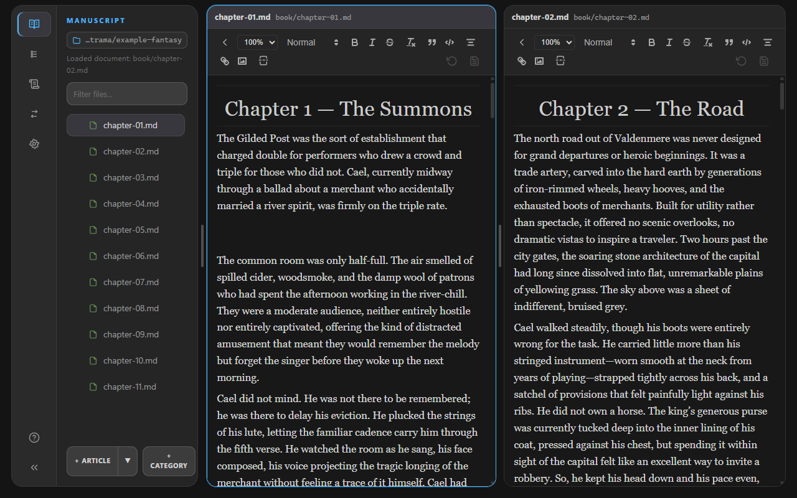
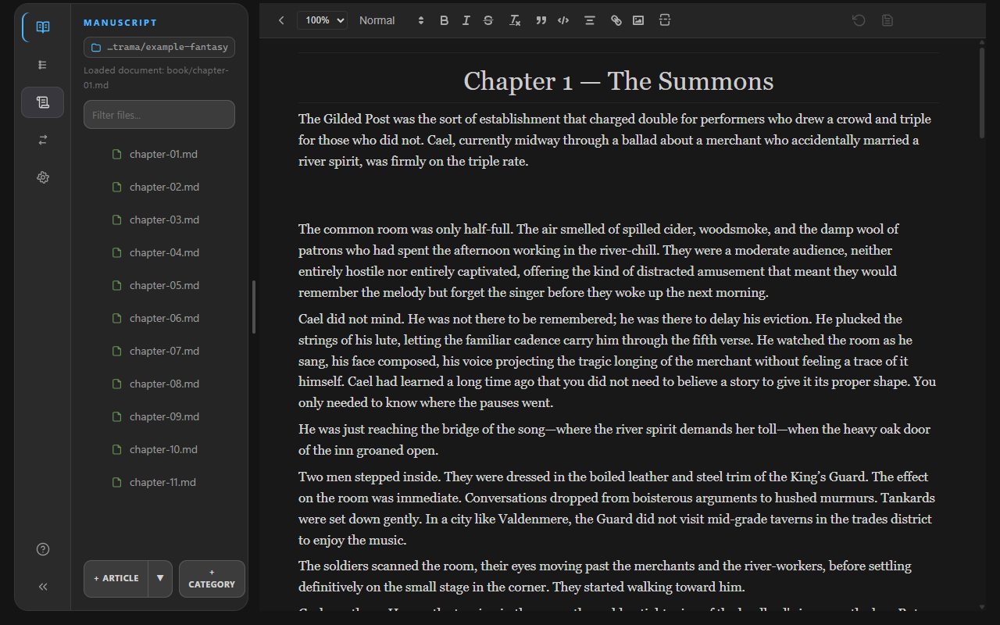
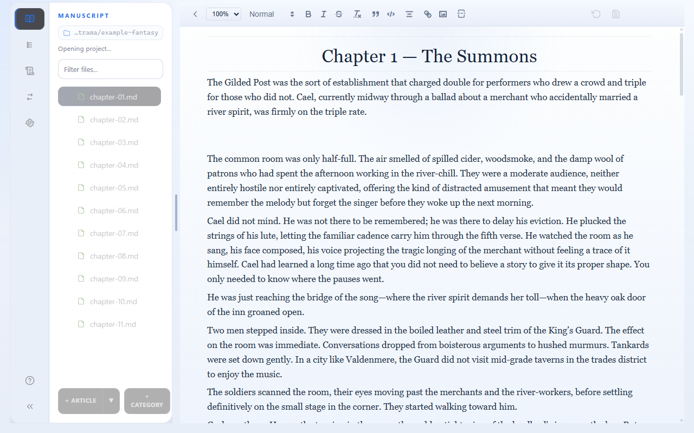
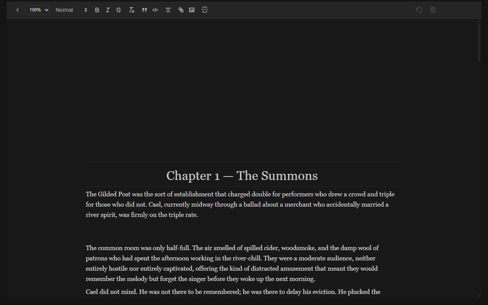

Split Panes
Open two documents side-by-side. Click in either pane to move the active caret, or press Ctrl/Cmd + . to toggle split layout. Each pane keeps its own open-document history.

Trama is a desktop environment optimized for writing and structuring long-form narrative projects. Everything in Trama is file-first, offline-ready, and simple to configure.


Every Trama project is simply a folder on your computer containing:
book/: Contains your manuscript files, ordered sequentially.outline/: Structural notes, summaries, or timeline files.lore/: Lore sheets, character sheets, location documents, and notes..trama.index.json: A metadata index tracking file orders, tags, and workspace details. Do not edit this manually.The sidebar groups your project into distinct directories. Use the filter input to quickly find documents by name. Right-click on any row in the file tree to rename or delete categories and files. Click the buttons at the bottom to add new articles or categories.
The editor provides a rich visual markdown workspace. Trama automatically manages and debounces document changes, saving files directly to your disk. If an external editor changes a file while it is open, Trama detects the conflict and lets you compare differences before accepting or discarding them.
Trama uses a minimal distraction-free interface. Most commands are accessible by:
Split panes, focus mode, and per-pane history help you work across documents without losing context.
Open two documents side-by-side. Click in either pane to move the active caret, or press Ctrl/Cmd + . to toggle split layout. Each pane keeps its own open-document history.

Dim everything except the current line, sentence, or paragraph so you can concentrate on the passage you are drafting. Toggle with Ctrl/Cmd + Shift + M. The sidebar hides while focus mode is active.

Each pane remembers the documents you opened there. Use Alt + Left and Alt + Right to step backward and forward through that pane's stack, or use the menu bar's Back and Forward entries.
| Command | Shortcut |
|---|---|
| Toggle Split Layout | Ctrl/Cmd + . |
| Toggle Fullscreen Mode | Ctrl/Cmd + Shift + F |
| Toggle Focus Mode | Ctrl/Cmd + Shift + M |
| Navigate Pane History Back | Alt + Left |
| Navigate Pane History Forward | Alt + Right |
| Find inside Document | Ctrl/Cmd + F |
| Find & Replace | Ctrl/Cmd + H |
| Reload Project | Ctrl/Cmd + R |
Explore Trama's advanced capabilities in detail: